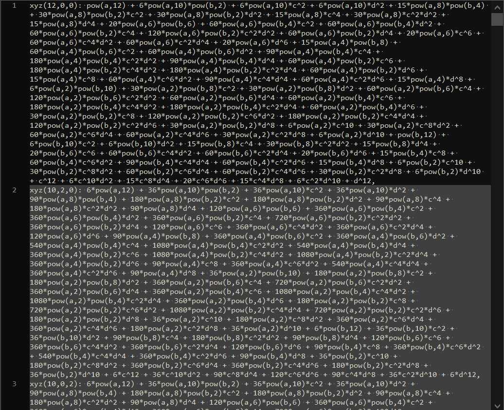

Fast expansion of a polynomial with Julia
Posted on July 17, 2022
by Stéphane Laurent
In the previous post, I showed how to expand a polynomial in R when the coefficients of the polynomial contain some literal values, with the help of the caracas package (a wrapper of SymPy). As I wrote, the method takes 20 minutes for the example I’m interested in.
Then I tried to do it with Julia. My attempt has been successful, and as usual Julia astonished me: it took about one minute only!
Here is the code, for my real example.
using AbstractAlgebra
using Printf # used to write the result
# define the symbolic constants
SS, (a,b,c,d,sqrt3,w0) = PolynomialRing(QQ, ["a","b","c","d","sqrt3","w0"])
# define the symbolic variables
TT, (x,y,z,w) = PolynomialRing(SS, ["x","y","z","w"])
# polynomial expression
P = ((x^2+y^2+z^2+w^2+145//3)^2-4*(9*z^2+16*w^2))^2*((x^2+y^2+z^2+w^2+145//3)^2+296*(x^2+y^2)-4*(9*z^2+16*w^2))-16*(x^2+y^2)*(x^2+y^2+z^2+w^2+145//3)^2*(37*(x^2+y^2+z^2+w^2+145//3)^2-1369*(x^2+y^2)-7*(225*z^2+448*w^2))-sqrt3*16//9*(x^3-3*x*y^2)*(110*(x^2+y^2+z^2+w^2+145//3)^3-148*(x^2+y^2+z^2+w^2+145//3)*(110*x^2+110*y^2-297*z^2+480*w^2))-64*(x^2+y^2)*(3*(729*z^4+4096*w^4)+168*(x^2+y^2)*(15*z^2-22*w^2))+64*(12100//27*(x^3-3*x*y^2)^2-7056*(3*x^2*y-y^3)^2)-592240896*z^2*w^2
# substitutions to be done
X = a*x - b*y - c*z - d*w0
Y = a*y + b*x + c*w0 - d*z
Z = a*z - b*w0 + c*x + d*y
W = a*w0 + b*z - c*y + d*x
# perform the substitutions
Q = P(X, Y, Z, W)
# vector of powers (exponents)
pows = map(degrees, terms(Q))
# vector of coefficients as strings
coeffs_str = map(string, coefficients(Q))
# generate the POV-Ray code
# three replacements:
# fractions: 145//3 => 145/3
# powers: w0^2 => pow(w0,2), a^3 => pow(a,3), b^4 => pow(b,4)
function g(degrees_coeff)
d, c = degrees_coeff
c = replace(c, r"//" => s"/")
c = replace(c, r"w0\^(\d+)" => s"pow(w0,\g<1>)")
c = replace(c, r"([ab])\^(\d+)" => s"pow(\g<1>,\g<2>)")
return @sprintf "xyz(%d,%d,%d): %s,\n" d[1] d[2] d[3] c
end
povray = map(g, zip(pows, coeffs_str))
# write the POV-Ray code to a file
io = open("povray.txt", "w")
for trm in povray
write(io, trm)
end
close(io)Not only it is fast, but it is also more easy to read than the R/Python code.
Here is how the generated file povray.txt looks like (it takes more than one megabyte):
